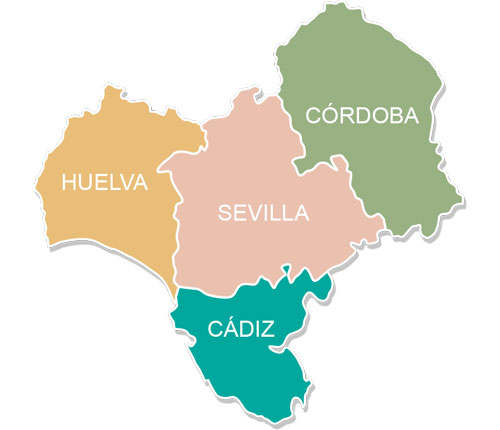

|
Andalucía Occidental es una región española que abarca la
parte oeste de la actual comunidad autónoma de Andalucía,
formado por las provincias de Huelva, Sevilla, Cádiz y Córdoba.
Asimismo, los colegios profesionales y otros organismos de
derecho público incluyen en ella, a efectos administrativos,
la ciudad autónoma de Ceuta
|
|
|
 |